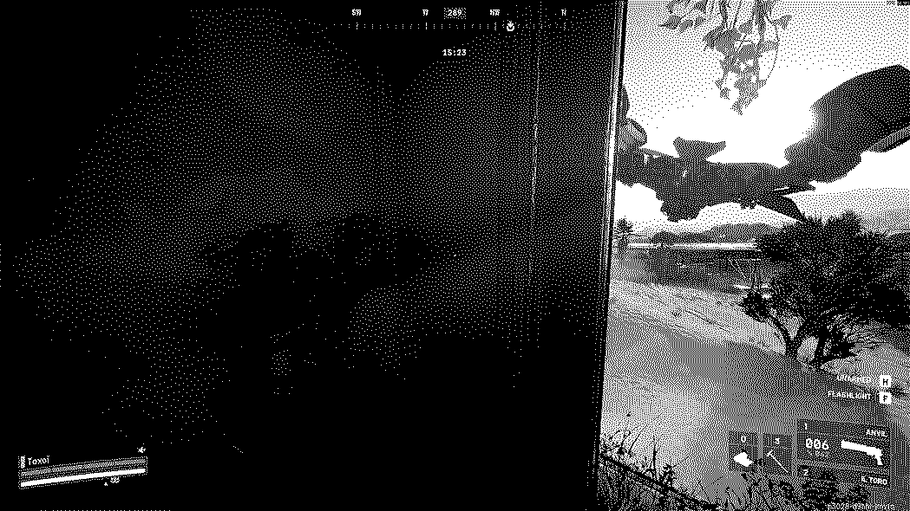
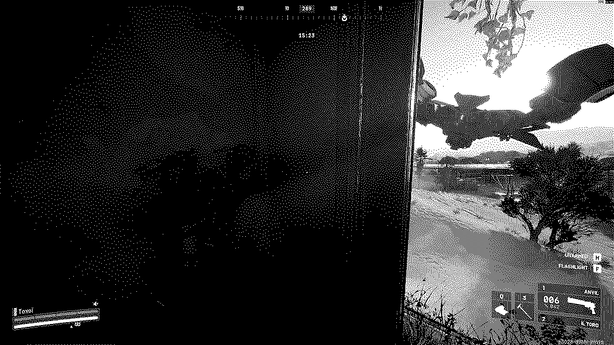

B1
Observation
16:53
As I look outside the window, after looting whatever I could find in the building I spot another player. He's running past my building. I sit, just watching, delibirating whether its worth it to engage in a fight. Suddenly a bright beam hits the raider, it appears another party had already made their decision.
B2
First engagement
16:51
Bang. Seeing the weakened raider run for cover I also make my decision to engage. As the raider attempts to run down the stairs to extract using the underground subway system I pull out my Avil and take a shot.
B3
Anotha one
16:04
The raider I was initially fighting managed to escape, or at least I lost track of him. Didn’t have much time to sulk about it however, as I suddenly hear the sound of a zipline. I quickly hide behind the wall of the apartment I am in, peek around the corner to see, what I can only assume to be the third party in the encounter sliding into a hole in the wall directly opposite of my window.

B4
Second engagement
15:55
I observe for a little bit as the new raider leaves the hole in the wall to, I imagine, chase the raider we had been fighting before. Little did he know however I was still here lurking in the dark window. As he stands at the top of the stairs, the same ones I had just shot the earlier raider not 30 seconds ago, I again take aim and let out a heavy hitting blow from my Anvil.
B5
No running away
15:51
The raider manages to escape my sights for just a second, as I am still surveying the stairs I catch a glimpse of moment. In the corner of my eye I see the raider running across the square in an attempt to escape and recoup some health and stamina.

B6
Tagged
15:48
Can’t get away for long however. I quickly move back to the window and line up my crosshairs around the raider. Another shot fired, and another hit registered.
B7
Violent world
15:40
The raider manages to get out of the sightlines available from my window, which means I have to move. I start to hear some interesting developments outside, just to the side of the apartment building. It seems the raiders tried to flank my building, but instead ended up running into a Rocketeer drone, a difficult predicament to be in, and I plan to make it worse.
B8
Twinning with the rocketeer
15:34
The raider finally turns the corner and both me and the Rocketeer open fire. They do their best to find cover behind the shrubbery in the corner of the building, without much success.
B9
Hiding
15:33
He is however not the online who doesn’t want to mess with the rocketeer. These things are dangerous and I am seriously ill equipped to handle it so I decide to retreat back into the safety of the building. In the corner of my eye I manage to see that the raider is still being lit up by the Rocketeer.
 

B10
Hands off
15:23
I listen, form the safety of my cover, to the raider being destroyed by the Rocketeer. I hear the conformation of his down through the audio cues of this raider meaning he is no longer to worry about, and I can drop by to see what loot he was carrying. The Rocketeer had now however turned his attention to me. Luckily I got some good cover so I should be able to just wait it out.